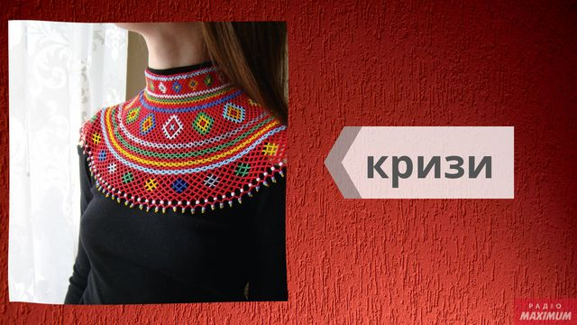
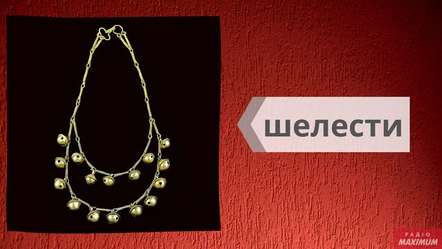
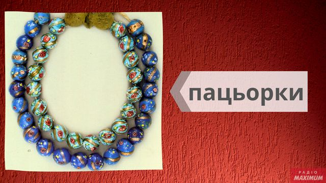
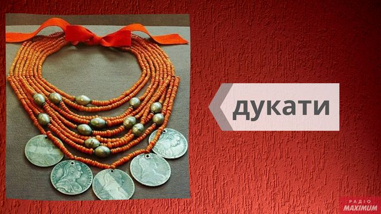
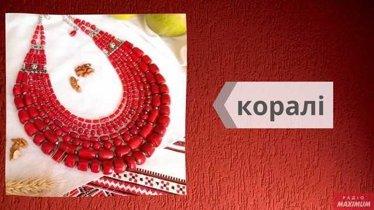

Краса українських жінок відома в усьому світі, оспівана в піснях, у літературних творах і живописі.
Неможливо уявити образ української красуні без прикраси, адже важливий елемент національного українського костюма – саме прикраси.
За часів наших прапрабабусь по костюму і прикрасам можна було точно визначити про сімейний стан красуні, про її достаток, про те, яка вона господиня.
У нашій уяві, характерна прикраса українки – багатоярусні буси, але це не вірно.
Українки носили кульчики (сережки), гердани, селянки, вишиті яскравими нитками та бісером пояси, намиста і браслети.
Створюючи свої неповторні прикраси, майстрині використовували метал і природні матеріали, бісер і корали, скляні буси і навіть монетки.
Унікальність українських прикрас залишала незабутнє враження на мандрівників і дослідників. Більшість етнічних прикрас знайшли гідне місце і в сучасному житті.
Поширений і улюблений українськими майстринями матеріал – бісер. І хоча в Україні його не виробляли, але кожна дівчина мала у своїй шкатулці хоча б одну бісерну прикрасу.
Гердани
Спочатку гердани вважалися чоловічою прикрасою, але з часом їх стали носити і жінки.
Прикраса схожа на сучасну краватку, а виготовляли її в різних техніках, найпоширеніша з них – «ручне ткацтво». Саме ця техніка передає красу та неповторність традиційних українських орнаментів.
З герданами пов'язано безліч міфів та легенд, згідно з якими – гердан не можна давати в борг, продавати або позичати: цими діями можна накликати біду,а все тому, що гердани – це не тільки красиві оригінальні прикраси,але й сильні обереги, що захищають людину від негативного впливу темних сил.
Силянки
Силянки або плетенки - смужки з різнокольорового бісеру, що зав'язуються ззаду на шиї. Назва прикраси походить від способу їх виготовлення – бісер нанизували на нитку (насилювали).
Силянки шириною в два-три сантиметри носили кожен день в якості оберега – достатньо було подивитися на орнамент, щоб визначити від чого він оберігав ту, яка його носила.
Для надання оберегу більше сили, гуцули нашивали бісерну стрічку з захисним візерунком на червону смужку полотна. Традиційний орнамент силянки – геометричний ромб з простими або складними контурами, трикутники, кривульки, зигзаги, що означають нескінченність.
Кризи
Кризи – круглі широкі коміри, сплетені з бісеру, покривають не тільки шию і плечі, а також груди жінки. Прикрасу не носили в будні дні, лемки і бойки носили його тільки на свята, надягаючи відразу кілька комірів різної довжини та ширини.
Бісерні ремені
Неможливо уявити святкове чоловіче або жіноче вбрання без поясу. Розшиті вручну бісером традиційними українськими візерунками, пояси ідеально доповнювали вишиті сорочки.
Вишиті бісером ремені – не просто прикраси, вони служили оберегами, на яких кожен візерунок, кожен колір мав своє значення. Згідно зі старовинними українськими повір'ями, розшитий бісером пояс – добрий охоронний символ, що приносить щастя і достаток власнику, покровитель добра і достатку. Жінки носили червоні пояси, і це неспроста – адже червоний колір у всі століття символізував любов і родючість.
Шелест
Найархаїчніше з усіх етнічних прикрас - шелест. Цю металеву прикрасу, зібрану з маленьких дзвінкових дзвіночків, носили на Гуцульщині на свята.
Пацьорки
Пацьорками називали намисто зі скла. Виготовляли їх зі смальти - непрозорого сплаву скла різних кольорів: блакитного, білого, синього, бірюзового, чорного, зеленого, червоного, коричневого. Скляні намистинки розписувалися золотом і кольоровими фарбами.
Дукач
Дукач або личман – велика монета, яка кріпилася на цілому ряді бус. Як правило, на лицьовому боці старовинної прикраси були сюжетні композиції. У народі неймовірно популярними були дукачі із зображенням біблійного сюжету.
Корали
У кожної, навіть дуже бідної українки було намисто з коралових намистин у вигляді бочонків або циліндрів, нанизаних на разок (нитку). Коралові буси могли складатися з 25 разків.
З чим носити етнічні прикраси сучасним дівчатам?
Етнічні прикраси сьогодні на піку популярності і це цілком зрозуміло: вони не тільки оригінальні і красиві, а й допомагають зробити цибулю вишуканою і колоритною.
З чим носити етнічні прикраси, щоб не виглядати безглуздо і смішно? Етнічні прикраси з бісеру – не тільки красиві й оригінальні, але й наділені особливою енергетикою.
Прикраси з бісеру прикрасять:
- Класичний одяг, додадуть їй «смаколики», розбавивши суворий стиль. Сірий діловий костюм, однотонна чорна сукня або біла блузка будуть виглядати не менш стильно і елегантно, якщо доповнити їх суворим герданом в червоно-білому кольорі.
- Довга вечірня сукня максі для виходу в світ тільки виграє від вишитого бісером ошатного поясу або довгої нитки яскравих бус.
- А ось великі силянки, різнокольорові буси краще носити з простим одягом – водолазкою і джинсами, однотонною сорочкою і штанами, трикотажною простою сукнею або тунікою в стилі casual.
- Приголомшливо виглядають етнічні прикраси з національним одягом – українськими вишиванками.
- Етнічні прикраси, виконані руками майстринь, відмінно будуть виглядати з літніми легкими речами – бавовняними сукнями та сарафанами, майками та топами.
Як правильно обрати ліжко?
При виборі ліжка в інтернет магазині Вам в першу чергу потрібно вибрати матеріал. Найбільшою популярністю користуються дерев'яні ліжка, виготовлені з вільхи, ясена чи дуба. Такі моделі чудово прикрасять Вашу спальню у квартирі чи приватному будинку. Для орендованих квартир, під здачу, більше підійде ліжко з металу, так як воно просто «не вбивається», а також має дуже демократичну ціну.
Для Вашої зручності ліжко може комплектуватись висувними ящиками або підйомним механізмом. Ящики можуть бути з одного боку ліжка або з двох. Також є моделі, з висувними ящиками спереду. Ліжка з підйомним механізмом, це відмінне рішення, для невеликих кімнат, вони дозволяють заощадити простір і мають велику нішу для зберігання постільної білизни. Всі дерев'яні ліжка комплектуються буковими ламелями. Спальне місце з ламельною основою може витримувати навантаження до 150 кг на одне спальне місце. Відстань між ламелями, у своїй має бути 2,5-3 див.
Кожне ліжко може бути забарвлене у різні кольори: чорні, білі, сірі, венге, у кольорі горіх. Завдяки цьому ліжко можна підібрати під будь-який інтер'єр.
Оформлення вітальні. Які м'які меблі краще вибрати?

Вітальня – це основна кімната у кожному будинку. Саме вона служить для прийому гостей, проведення часу всією сім'єю та просто для відпочинку у приємній теплій атмосфері. Оформляючи свій будинок та вітальню зокрема, всі намагаються зробити її максимально зручною, комфортною та красивою. Основним та центральним елементом оформлення вітальні, як і будь-якої іншої кімнати, є м'які меблі.
Будь-які меблі для вітальні повинні бути не тільки стильними і красивими, але і функціональними. На таких меблів має бути зручно та приємно відпочивати та приймати гостей. Однак сьогодні існує величезна різноманітність найрізноманітніших м'яких меблів для вітальні, яка підходить для кімнат різних розмірів і форм. На чому варто зупинити свій вибір? Як краще оформити свою вітальню, щоб вам було комфортно, а гості хотіли приходити до вас знову та знову?
На сайті інтернет магазину Кровато представлено велику різноманітність м'яких меблів для вітальні, серед яких кожен зможе вибрати для себе найбільш вдалий варіант. У нас ви знайдете:
- Прямі дивани. Такі дивани вважаються класикою. Вони підходять для віталень будь-яких форм та розмірів. Прямий диван виглядає стильно та лаконічно, на ньому зручно відпочивати, приймати гостей або навіть спати. Прямі дивани можуть стояти біля стіни, так і в центрі кімнати. Багато моделей прямих диванів легко розкладаються, перетворюючись на повноцінне спальне місце. Також більшість диванів мають великі та місткі ніші, які є додатковим місцем для зберігання;
- Кутові дивани Кутові дивани вважаються найзручнішими та комфортнішими. Вони ідеально підійдуть для приємного проведення часу в колі сім'ї або друзів. Кутові дивани в основному використовуються для оформлення великих віталень, так як вони займають багато місця, і для кімнат з невеликою площею просто не підійдуть;
- Тахти. Тахта - це одна з варіацій дивана, але стильніша і мінімалістична. Виглядають тахти дуже незвично і можуть підійти для будь-якого інтер'єру. Також тахти більше ніж звичайні дивани підходять для сну, оскільки в їх основі не пружинні блоки, а дерев'яні ламелі або ортопедичні матраци;
- Крісла. Крісло – це особливий предмет інтер'єру. Сучасні дизайнери не часто використовують його, вважаючи застарілим, проте саме крісла створюють особливий затишок та комфорт у будь-якій кімнаті. Сьогодні існує величезна різноманітність класичних та сучасних моделей крісел, що дозволяє кожному відшукати ідеальне крісло для свого будинку;
- Набір меблів. Комплект м'яких меблів – це відмінне рішення для тих, хто хоче меблювати свою вітальню не лише диваном, а й кріслами. Існують набори з одним або двома кріслами, із прямими або кутовими диванами. Основна перевага будь-якого готового меблевого гарнітура – це те, що предмети меблів у ньому ідеально поєднуються один з одним, і вам не потрібно буде витрачати свій час та сили на їхній підбір.
Підбір м'яких меблів для вітальні – це заняття непросте. Однак при виборі та покупці меблів для своєї вітальні пам'ятайте, що якісні м'які меблі повинні бути не тільки красивими, але й зручними для вас і всіх мешканців вашого будинку.